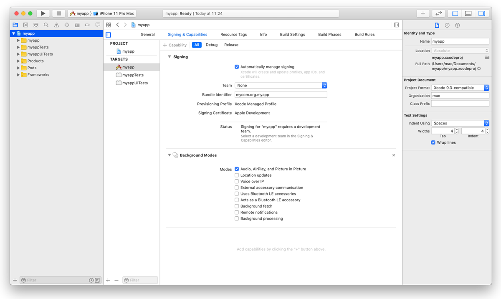
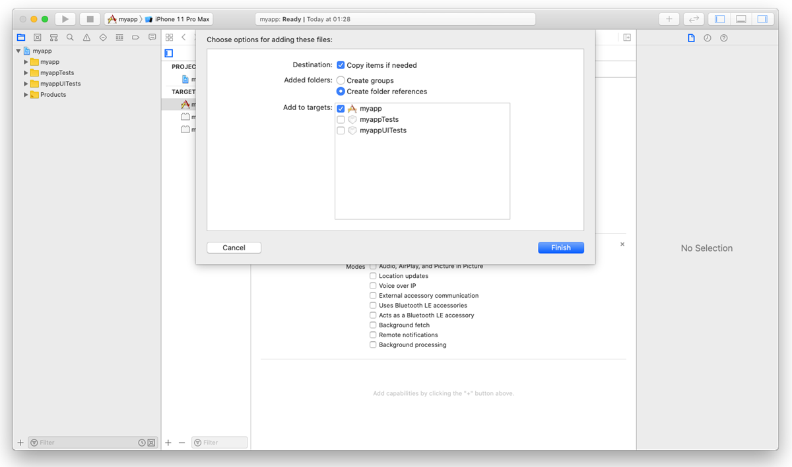
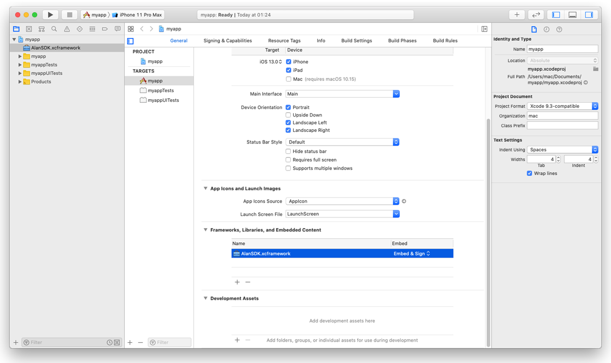
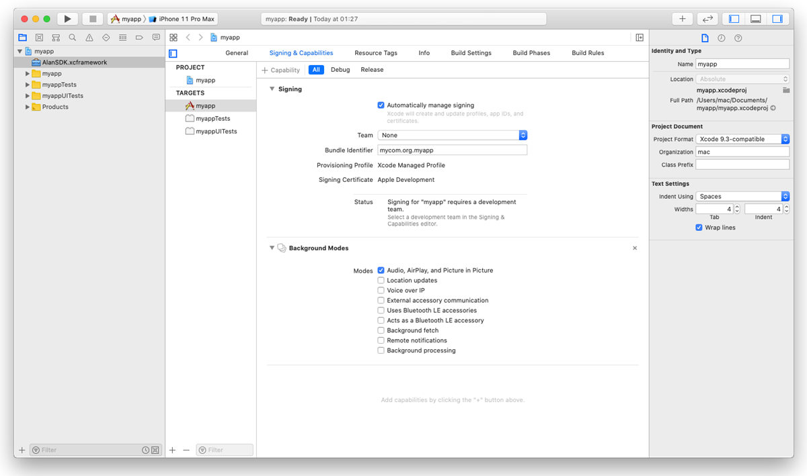

Alan AI iOS SDK¶

Alan AI can be integrated with iOS apps developed in Swift and Objective-C.
Integrating with Alan AI¶
To add a conversational experience to an iOS app, you need to do the following:
Integrate with the app: Swift or Objective-C. As part of this process, you will:
Step 1. Get the Alan AI iOS SDK framework¶
First, you need to get the Alan AI iOS SDK framework and set up your XCode project to be used with Alan AI. You can do it in two ways:
Set up an XCode project with CocoaPods
Set up an XCode project manually
Do the following:
On the machine, open Terminal and install CocoaPods:
Terminal¶sudo gem install cocoapods
Go to the project folder and create a Podfile for the project:
Terminal¶pod init
Open the Podfile and edit it:
Podfile¶use_frameworks! platform :ios, '11.0' target '<Your Target Name>' do pod 'AlanSDK-iOS' end
In the project folder, install the dependencies for the project:
Terminal¶pod install pod update
In iOS, the user must explicitly grant permission for an app to access the user’s data and resources. An app with the Alan AI button requires access to:
User’s device microphone for voice interactions
User’s device camera for testing Alan AI projects on mobile
To comply with this requirement, you must add
NSMicrophoneUsageDescriptionandNSCameraUsageDescriptionkeys to theInfo.plistfile of your app and provide a message why your app requires access to the microphone and camera. The message will be displayed only when Alan AI needs to activate the microphone or camera.To add the key:
In the Xcode project, go to the Info tab.
In the Custom iOS Target Properties section, hover over any key in the list and click the plus icon to the right.
From the list, select Privacy - Microphone Usage Description.
In the Value field to the right, provide a description for the added key. This description will be displayed to the user when the app is launched.
Repeat the steps above to add the Privacy - Camera Usage Description key.

To allow the background mode for the iOS app, go to the Signing and Capabilities tab. In the top left corner, click + Capability and in the capabilities list, double-click Background Modes. In the Modes list, select the Audio, AirPlay, and Picture in Picture check box.
The background mode must also be turned on in the Alan AI Studio project. In Alan AI Studio, at the top of the code editor, click Integrations, go to the iOS tab and enable the Keep active while the app is in the background option.
Do the following:
Open the Alan AI iOS SDK release page on Alan AI GitHub.
Download the
AlanSDK.xcframework_<x.x.x>.zipfile from the latest release and extractAlanSDK.xcframeworkfrom the ZIP archive.
Drag
AlanSDK.xcframeworkand drop it onto the root node of the Xcode project.Select the Copy items if needed check box if it is not selected.
In the project tree, select the XCode project file and go to the General tab. Under the Frameworks, Libraries, and Embedded Content section, find
AlanSDK.xcframeworkand select Embed & Sign from the list.In iOS, the user must explicitly grant permission for an app to access the user’s data and resources. An app with the Alan AI button requires access to:
User’s device microphone for voice interactions
User’s device camera for testing Alan AI projects on mobile
To comply with this requirement, you must add
NSMicrophoneUsageDescriptionandNSCameraUsageDescriptionkeys to theInfo.plistfile of your app and provide a message why your app requires access to the microphone and camera. The message will be displayed only when Alan AI needs to activate the microphone or camera. To add the key:In the Xcode project, go to the Info tab.
In the Custom iOS Target Properties section, hover over any key in the list and click the plus icon to the right.
From the list, select Privacy - Microphone Usage Description.
In the Value field to the right, provide a description for the added key. This description will be displayed to the user when the app is launched.
Repeat the steps above to add the Privacy - Camera Usage Description key.
To allow the background mode for the iOS app, go to the Signing and Capabilities tab. In the top left corner, click +Capability and in the capabilities list, double-click Background Modes. In the Modes list, select the Audio, AirPlay, and Picture in Picture check box.
The background mode must also be turned on in the Alan AI Studio project. In Alan AI Studio, at the top of the code editor, click Integrations, go to the iOS tab and enable the Keep active while the app is in the background option.
Step 2. Integrate with the app¶
Note
The instructions below apply to the Storyboard user interface.
You need to integrate Alan AI with your app written in:
Swift
Objective-C
In the Xcode project, open the ViewController.swift file. You need to add the following Swift snippet to your view controller:
At the top of the file, import AlanSDK:
Client app¶import AlanSDK
In the
ViewControllerclass, define theAlanButtonvariable:Client app¶fileprivate var button: AlanButton!
In
viewDidLoad(), set upAlanButton. For more details, see Alan AI Config object and Alan AI button.Client app¶import UIKit import AlanSDK class ViewController: UIViewController { /// Alan AI button fileprivate var button: AlanButton! override func viewDidLoad() { super.viewDidLoad() /// Setup the Alan AI button self.setupAlan() } fileprivate func setupAlan() { /// Define the project key let config = AlanConfig(key: "") /// Init the Alan AI button self.button = AlanButton(config: config) /// Add the button to the view self.view.addSubview(self.button) self.button.translatesAutoresizingMaskIntoConstraints = false /// Align the button on the view let views = ["button" : self.button!] let verticalButton = NSLayoutConstraint.constraints(withVisualFormat: "V:|-(>=0@299)-[button(64)]-40-|", options: NSLayoutConstraint.FormatOptions(), metrics: nil, views: views) let horizontalButton = NSLayoutConstraint.constraints(withVisualFormat: "H:|-(>=0@299)-[button(64)]-20-|", options: NSLayoutConstraint.FormatOptions(), metrics: nil, views: views) self.view.addConstraints(verticalButton + horizontalButton) } }
In
let config = AlanConfig(key: ""), define the Alan AI SDK key for your Alan AI Studio project. To get the key, in Alan AI Studio, at the top of the code editor, click Integrations and copy the value from the Alan SDK Key field.Run the app and tap the Alan AI button to speak.
Add this Objective-C snippet to your view controller.
Import AlanSDK:
Client app¶@import AlanSDK;
Define the
AlanButtonvariable:Client app¶@property (nonatomic) AlanButton* button;
In
viewDidLoad, set upAlanButton. For more details, see Alan AI Config object and Alan AI button.Client app¶AlanConfig* config = [[AlanConfig alloc] initWithKey:@"YOUR_KEY_FROM_ALAN_STUDIO_HERE"]; self.button = [[AlanButton alloc] initWithConfig:config]; [self.button setTranslatesAutoresizingMaskIntoConstraints:NO]; [self.view addSubview:self.button]; NSLayoutConstraint* b = [NSLayoutConstraint constraintWithItem:self.button attribute:NSLayoutAttributeBottom relatedBy:NSLayoutRelationEqual toItem:self.view attribute:NSLayoutAttributeBottom multiplier:1 constant:-40.0]; NSLayoutConstraint* r = [NSLayoutConstraint constraintWithItem:self.button attribute:NSLayoutAttributeRight relatedBy:NSLayoutRelationEqual toItem:self.view attribute:NSLayoutAttributeRight multiplier:1 constant:-20]; NSLayoutConstraint* w = [NSLayoutConstraint constraintWithItem:self.button attribute:NSLayoutAttributeWidth relatedBy:NSLayoutRelationEqual toItem:nil attribute:NSLayoutAttributeNotAnAttribute multiplier:1 constant:64.0]; NSLayoutConstraint* h = [NSLayoutConstraint constraintWithItem:self.button attribute:NSLayoutAttributeHeight relatedBy:NSLayoutRelationEqual toItem:nil attribute:NSLayoutAttributeNotAnAttribute multiplier:1 constant:64.0]; [self.view addConstraints:@[b, r, w, h]];
Run the app and tap the Alan AI button to speak.
AlanConfig object¶
The AlanConfig object describes the parameters that are provided for AlanButton.
Create a new
AlanConfiginstance with your Alan AI SDK key:Client app¶- (instancetype)initWithKey:(NSString *)key;
Name
Type
Description
keyNSString
The Alan AI SDK key for your project in Alan AI Studio.
Create a new
AlanConfiginstance with your Alan AI SDK key and custom data object:Client app¶- (instancetype)initWithKey:(NSString *)key dataObject:(NSDictionary *)dataObject;
Name
Type
Description
keyNSString
The Alan AI SDK key for a project in Alan AI Studio.
dataObjectNSDictionary
(Optional) A valid JSON string or JSON object with authentication or configuration data to be sent to the dialog script. For details, see authData.
For example:
Client app¶AlanConfig *config = [[AlanConfig alloc] initWithKey:@"YOUR_KEY_FROM_ALAN_STUDIO_HERE"];
Alan AI button¶
To add the Alan AI button to your app, use the AlanButton class. This class provides a view with the AI assistant button and instance methods to communicate with Alan AI Studio.
Сreate a new AlanButton instance with the config object:
- (instancetype)initWithConfig:(AlanConfig *)config;
Name |
Type |
Description |
|---|---|---|
|
AlanConfig |
The AlanConfig object for configuration which is described above |
For example:
@interface ViewController ()
@property (nonatomic) AlanButton *button;
@end
@implementation ViewController
- (void)viewDidLoad
{
[super viewDidLoad];
AlanConfig *config = [[AlanConfig alloc] initWithKey:@"YOUR_KEY_FROM_ALAN_STUDIO_HERE"];
self.button = [[AlanButton alloc] initWithConfig:config];
[self.button setTranslatesAutoresizingMaskIntoConstraints:NO];
[self.view addSubview:self.button];
NSLayoutConstraint *right = [NSLayoutConstraint constraintWithItem:self.button attribute:NSLayoutAttributeRight relatedBy:NSLayoutRelationEqual toItem:self.view attribute:NSLayoutAttributeRight multiplier:1 constant:-20.0];
NSLayoutConstraint *bottom = [NSLayoutConstraint constraintWithItem:self.button attribute:NSLayoutAttributeBottom relatedBy:NSLayoutRelationEqual toItem:self.view attribute:NSLayoutAttributeBottom multiplier:1 constant:-20.0];
NSLayoutConstraint *width = [NSLayoutConstraint constraintWithItem:self.button attribute:NSLayoutAttributeWidth relatedBy:NSLayoutRelationEqual toItem:nil attribute:NSLayoutAttributeNotAnAttribute multiplier:1 constant:64.0];
NSLayoutConstraint *height = [NSLayoutConstraint constraintWithItem:self.button attribute:NSLayoutAttributeHeight relatedBy:NSLayoutRelationEqual toItem:nil attribute:NSLayoutAttributeNotAnAttribute multiplier:1 constant:64.0];
[self.view addConstraints:@[right, bottom, width, height]];
}
@end
Using client API methods¶
You can use the following client API methods in your app:
setVisualState()¶
Use the setVisualState() method to inform the AI assistant about the app’s visual context. For details, see setVisualState().
callProjectApi()¶
Use the callProjectApi() method to send data from the client app to the dialog script and trigger activities without voice and text commands. For details, see callProjectApi().
projectAPI.setClientData = function(p, param, callback) {
console.log(param);
};
- (void)callProjectApi {
/// Providing any params
[self.button callProjectApi:@"script::funcName" withData:@{@"data":@"your data"} callback:nil];
}
func callProjectApi() {
/// Providing any params
self.button.callProjectApi("script::funcName", withData: ["data":"your data"], callback: nil)
}
playText()¶
Use the playText() method to play specific text in the client app. For details, see playText().
sendText()¶
Use the sendText() method to send a text message to Alan AI as the user’s input. For details, see sendText().
/// Sending any text message
- (void)sendText {
/// Providing text as string param
[self.button sendText:@"Hello Alan, can you help me?"];
}
/// Sending any text message
func sendText() {
/// Providing text as string param
self.button.sendText("Hello Alan, can you help me?")
}
playCommand()¶
Use the playCommand() method to execute a specific command in the client app. For details, see playCommand().
activate()¶
Use the activate() method to activate the Alan AI button programmatically. For details, see activate().
deactivate()¶
Use the deactivate() method to deactivate the Alan AI button programmatically. For details, see deactivate().
isActive()¶
Use the isActive() method to check the Alan AI button state: active or not. For details, see isActive().
getWakewordEnabled()¶
Use the getWakewordEnabled() method to check the state of the wake word for the Alan AI button. For details, see getWakewordEnabled().
setWakewordEnabled()¶
Use the setWakewordEnabled() method to enable or disable the wake word for the Alan AI button. For details, see setWakewordEnabled().
Using handlers¶
You can use the following Alan AI handlers in your app:
onCommand handler¶
Use the onCommand handler to handle commands sent from the dialog script. For details, see onCommand handler.
onButtonState handler¶
Use the onButtonState handler to capture and handle the Alan AI button state changes. For details, see onButtonState handler.
onEvent handler¶
Use the onEvent handler to capture and handle events emitted by Alan AI: get user’s utterances, assistant responses and so on. For details, see onEvent handler.
self.button.onEvent = ^(NSString *payload) {
NSData* eventData = [payload dataUsingEncoding:NSUTF8StringEncoding];
NSError* error = nil;
NSDictionary* eventDict = [NSJSONSerialization JSONObjectWithData:eventData options:0 error:&error];
if (error != nil) {
return;
}
NSLog(@"%@", eventDict);
};
self.button.onEvent = { event in
guard let eventData = event?.data(using: .utf8, allowLossyConversion: false),
let eventDict = try? JSONSerialization.jsonObject(with: eventData, options: .mutableContainers)
else {
return
}
print(eventDict)
}